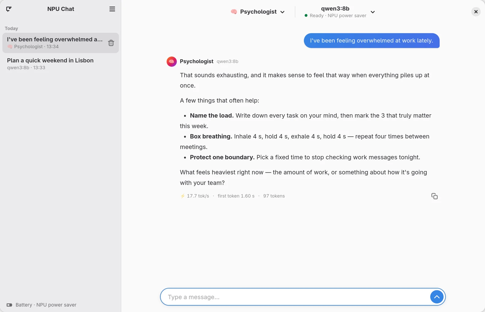
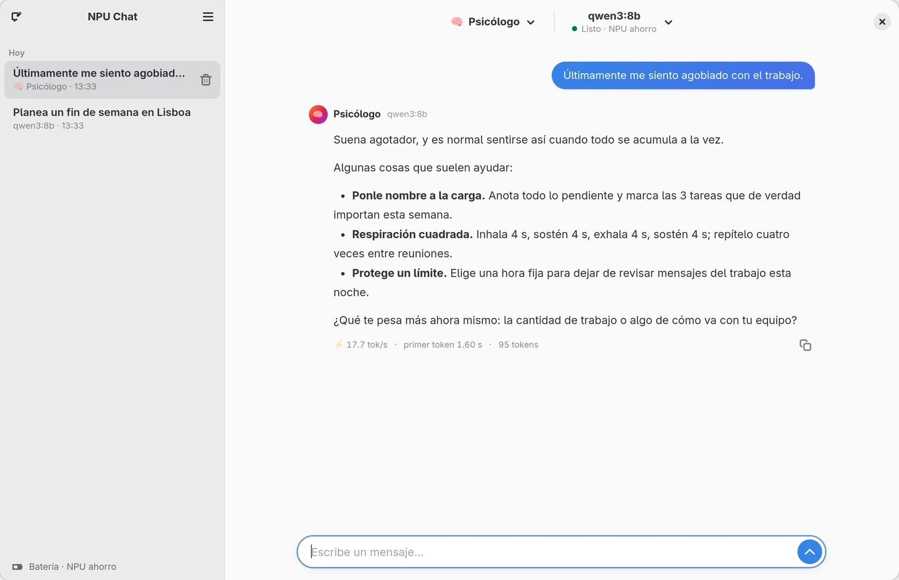

The third chip,
finally talking.
El tercer chip,
por fin habla.
Your laptop has a CPU, a GPU and an NPU built for AI that mostly sits idle. NPU Chat is a small, private chat app for Linux that runs language models on that NPU. Your CPU and GPU stay free, and your battery barely notices. Tu laptop tiene CPU, GPU y una NPU hecha para IA que casi nunca se usa. NPU Chat es una app de chat pequeña y privada para Linux que corre modelos de lenguaje en esa NPU. Tu CPU y tu GPU quedan libres, y tu batería casi ni lo nota.
Free & open source (MIT) · Offline · Updates itself · English / Español Libre y de código abierto (MIT) · Sin internet · Se actualiza sola · Español / English


Measured characteristicsCaracterísticas medidas
Most local AI apps on Linux (Ollama, llama.cpp, LM Studio) run on the CPU or GPU. This is what happens when the NPU does the work instead. La mayoría de apps de IA local en Linux (Ollama, llama.cpp, LM Studio) usan la CPU o la GPU. Esto es lo que pasa cuando el trabajo lo hace la NPU.
| ParameterParámetro | GeneratingGenerando | IdleReposo | What it meansQué significa |
|---|---|---|---|
| CPU loadUso de CPU | 6 % | 3.5 % | Your processor stays free for everything else.Tu procesador queda libre para todo lo demás. |
| GPU loadUso de GPU | 1 % | 1 % | Graphics untouched: video, games and desktop run as usual.La gráfica ni se entera: video, juegos y escritorio siguen igual. |
| System powerConsumo total | 8.4 W | 8.6 W | The whole laptop, on battery. Generating costs about as much as sitting idle.Toda la laptop, en batería. Generar cuesta casi lo mismo que no hacer nada. |
| SpeedVelocidad | 11.7 tok/s | — | A steady reading pace. Smaller models are faster; the app estimates each one.Ritmo de lectura constante. Los modelos más chicos van más rápido; la app estima cada uno. |
Test conditions: Ryzen AI 5 430 (XDNA 2), 16 GB, FastFlowLM 1.0.7, qwen3.5:9b, NPU power-saver mode, on battery, 400 tokens. Condiciones: Ryzen AI 5 430 (XDNA 2), 16 GB, FastFlowLM 1.0.7, qwen3.5:9b, NPU en modo ahorro, en batería, 400 tokens.
Functional descriptionDescripción funcional
Everything a chat needs, and nothing it doesn't.Todo lo que un chat necesita, y nada que sobre.
100% local100 % local
Chats and models stay on your laptop. Works offline.Chats y modelos se quedan en tu laptop. Funciona sin internet.
Only models that fitSolo modelos que caben
Reads your NPU, RAM and disk, and lists only compatible models with their expected speed.Revisa tu NPU, RAM y disco, y muestra solo modelos compatibles con su velocidad esperada.
AssistantsAsistentes
Write your own or pick from a gallery of 48: psychologist, strategist, tutor, chef and more.Crea los tuyos o elige entre 48 en la galería: psicólogo, estratega, tutor, chef y más.
Battery-awareCuida la batería
Power saver on battery, full speed when plugged in. Idle models are unloaded.Ahorro en batería, máxima velocidad conectada. Libera el modelo cuando no lo usas.
Chat with your documentsChatea con tus documentos
Add PDF, text or Markdown files and get answers with cited sources. Works across languages, and everything stays local.Añade PDF, texto o Markdown y recibe respuestas con fuentes citadas. Funciona entre idiomas y todo se queda en tu equipo.
Teams of assistantsEquipos de asistentes
Pick several (trainer + nutritionist): the right specialist answers each topic, and one with nothing to add passes.Elige varios (entrenador + nutricionista): responde el especialista de cada tema, y quien no tenga nada que añadir pasa.
SkillsHabilidades
A calculator that never guesses, the date and time, your laptop's status and Wikipedia. The model decides when to use them and shows what it did.Una calculadora que no adivina, la fecha y la hora, el estado de tu laptop y Wikipedia. El modelo decide cuándo usarlas y te muestra lo que hizo.
Updates itselfSe actualiza sola
New versions install in one click, verified with SHA-256 before anything is replaced.Las versiones nuevas se instalan con un clic y se verifican con SHA-256 antes de reemplazar nada.
Light, dark & bilingualClaro, oscuro y bilingüe
Follows your system theme. Interface in English and Español.Sigue el tema de tu sistema. Interfaz en español e inglés.
Getting startedPuesta en marcha
You need an AMD Ryzen AI 300/400 series laptop (XDNA 2 NPU) and a current Linux distribution.Necesitas una laptop AMD Ryzen AI serie 300/400 (NPU XDNA 2) y una distribución de Linux actual.
Install FastFlowLM, the NPU engineInstala FastFlowLM, el motor de la NPU
Follow the official guide for Ubuntu or Arch. On Fedora:Sigue la guía oficial para Ubuntu o Arch. En Fedora:
$ sudo dnf copr enable alessandrolattao/fastflowlm
$ sudo dnf install --exclude=xdna-driver-dkms fastflowlm
$ sudo flm-fetch-kernelsDownload and run NPU ChatDescarga y abre NPU Chat
$ chmod +x NPU-Chat-x86_64.AppImage
$ ./NPU-Chat-x86_64.AppImagePick a model and chatElige un modelo y conversa
Open the model menu, download one marked as compatible, and start typing.Abre el menú de modelos, descarga uno marcado como compatible y empieza a escribir.
Troubleshooting: “The NPU needs a system setting to work”Solución: «La NPU necesita un ajuste del sistema para funcionar»
systemd caps locked memory at 8 MB, and the NPU needs more to load a model. Run this once, then reboot:systemd limita la memoria fija a 8 MB y la NPU necesita más para cargar un modelo. Ejecuta esto una vez y reinicia:
$ sudo mkdir -p /etc/systemd/system/user@.service.d /etc/systemd/user.conf.d
$ printf '[Service]\nLimitMEMLOCK=infinity\n' | sudo tee /etc/systemd/system/user@.service.d/memlock.conf
$ printf '[Manager]\nDefaultLimitMEMLOCK=infinity\n' | sudo tee /etc/systemd/user.conf.d/memlock.confCompatibilityCompatibilidad
| ProcessorProcesador | AMD Ryzen AI 300 / 400 series · XDNA 2 NPU |
| Linux | Kernel 7.0+ (or the amdxdna DKMS driver) · any distro with glibc 2.38+: Ubuntu 24.04+, Debian 13, Fedora 39+, Arch and moreKernel 7.0+ (o el driver amdxdna por DKMS) · cualquier distro con glibc 2.38+: Ubuntu 24.04+, Debian 13, Fedora 39+, Arch y más |
| EngineMotor | FastFlowLM |
| NetworkRed | None while chatting. One update check per day, which you can turn off.Ninguna al chatear. Una consulta de actualizaciones al día, que puedes desactivar. |